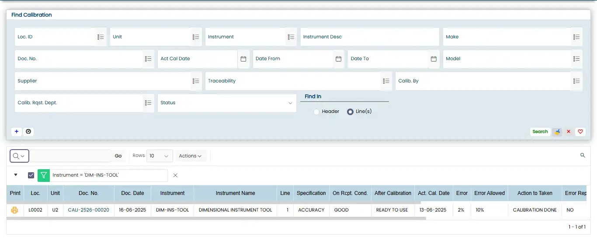
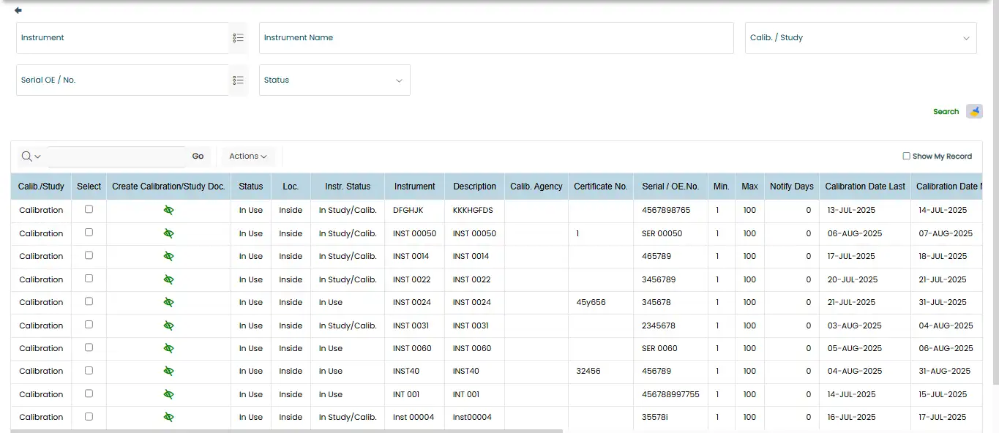
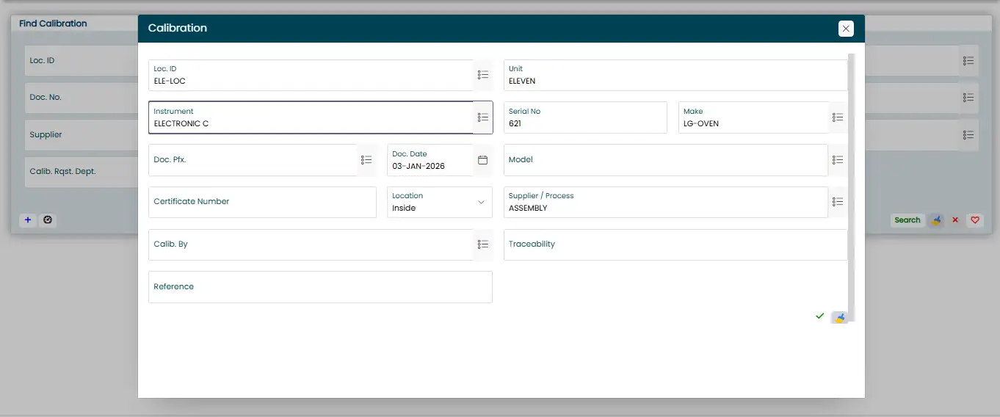
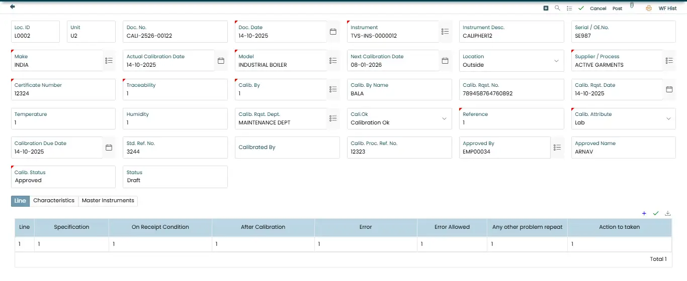
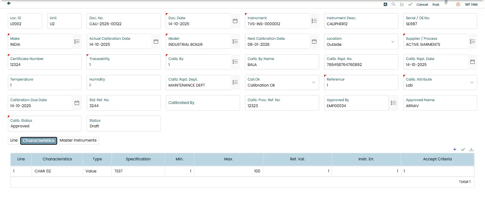

<div data-category="Quality control Management" data-title="Calibration" data-updated="December 01, 2025" data-contributors="RoadmapIT" data-breadcrumb="Home,Quality control Management,Calibration">
  <div class="page-content">
    <p>The Calibration study created will be displayed in the following screen. The Calibration study can also be created manually.</p>

    <h5>Navigation Path</h5>
    <p class="fs-6">Quality Management \ Transaction \ Measurement System Analysis</p>

    
    <ul style="list-style-type: none; align-content: center">
      <li class="mouse-icon">Search screen displays the list of Calibration studies with relevant details and status.</li>
      <li class="mouse-icon">User can filter the documents by entering the search parameters at the header.</li>
      <li class="mouse-icon">On clicking search button, system displays results relevant to the search parameters entered.</li>
      <li class="mouse-icon">
        Using
        
        icon, entered search parameters can be cleared.
      </li>
      <li class="mouse-icon">
        To close the screen, use
        <i class="bi bi-x fs-4 mx-2 text-danger"></i>
        icon.
      </li>
      <li class="mouse-icon">
        Click the
        <i class="bi bi-plus fs-4 mx-2 text-primary"></i>
        Add button to create a new calibration study document.
      </li>
      <li class="mouse-icon">Click on Pending Calibration button to view pending Calibration dues.</li>
    </ul>

    
    <ul style="list-style-type: none; align-content: center">
      <li class="mouse-icon">The study of the Instrument after activation is displayed in the Calibration dues screen.</li>
      <li class="mouse-icon">Check the Select flag and click on Create Calibration/Study Doc to create the corresponding study document.</li>
      <li class="mouse-icon">Status of the study changes to In Study/Calib. once the document is created.</li>
      <li class="mouse-icon">Instrument status is also updated to In Study/Calib.</li>
      <li class="mouse-icon">Calibration study document types include:</li>
      <ul>
        <li class="ps-0 ms-3">Calibration Study</li>
        <li class="ps-0 ms-3">Inspection</li>
      </ul>
      <li class="mouse-icon">Study documents are created sequentially based on Calibration date.</li>
      <li class="mouse-icon">If a gauge status is In Study/Calib., the next study cannot be created.</li>
      <li class="mouse-icon">Once current study is completed, Instrument status updates to In Use.</li>
    </ul>

    
    <ul style="list-style-type: none; align-content: center">
      <li class="mouse-icon">Choose the Loc ID from LOV; Unit auto populates based on location.</li>
      <li class="mouse-icon">Select the Instrument.</li>
      <li class="mouse-icon">Select Doc Pfx and Doc Date.</li>
      <li class="mouse-icon">Select Make and Model from LOV.</li>
      <li class="mouse-icon">Select Calib. By.</li>
      <li class="mouse-icon">Select Supplier/Process.</li>
      <li class="mouse-icon">Enter Traceability and Reference.</li>
      <li class="mouse-icon">
        Click on
        <i class="bi bi-check-lg fs-4 mx-1 text-success"></i>
        to create new Calibration document.
      </li>
    </ul>

    
    <ul style="list-style-type: none; align-content: center">
      <li class="mouse-icon">Calibration studies from dues screen are displayed with Calibration Due Date.</li>
      <li class="mouse-icon">Enter the Actual calibration date for the Instrument.</li>
      <li class="mouse-icon">Enter the Next calibration date.</li>
      <li class="mouse-icon">Enter Specification and On Receipt Condition fields.</li>
      <li class="mouse-icon">Enter values after calibration and Instrument Error if occurred.</li>
    </ul>

    
    <ul style="list-style-type: none; align-content: center">
      <li class="mouse-icon">Enter/Select Characteristics from LOV.</li>
      <li class="mouse-icon">Enter corresponding Specification.</li>
      <li class="mouse-icon">Enter Calib. By field.</li>
      <li class="mouse-icon">
        Click on
        <i class="bi bi-check-lg fs-4 mx-1 text-success"></i>
        to save. Document Number is generated for the Calibration study.
      </li>
      <li class="mouse-icon">Enter/Select Approved By from LOV for authority approval.</li>
      <li class="mouse-icon">Click on Post button to send document for approval.</li>
      <li class="mouse-icon">Study document can be cancelled using Cancel button.</li>
      <li class="mouse-icon">
        Report can be viewed using
        <i class="bi bi-printer fs-5 mx-1" style="color: #ff9103;"></i>
        Print Instrument.
      </li>
      <li class="mouse-icon">Once Entry Complete, instrument study is completed and status updates from In Study/Calibration to In Use.</li>
    </ul>
  </div>
</div>
